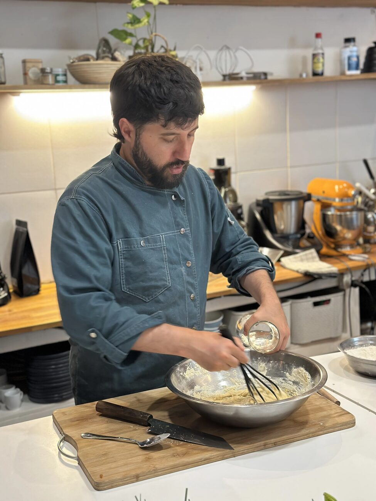

Fundador de Clorofila · Parque Rodó, Montevideo
Leonardo Lemes.
Chef, docente e investigador gastronómico con 25 años de experiencia y 13 enseñando. Pionero en Uruguay en cocina basada en plantas, fermentación y comprensión científica del alimento.
La técnica solo tiene sentido cuando clarifica. Cuando se usa para impresionar en lugar de aclarar, algo está mal.
Leonardo desarrolló su enfoque durante más de dos décadas en cocinas, mercados y espacios de estudio. Su metodología parte de una premisa simple: para cocinar bien hay que entender qué pasa en la olla, no seguir pasos en papel.
Su investigación abarca la química del alimento, la microbiología de las fermentaciones, el impacto del calor sobre los nutrientes, y la intersección entre cocina, salud y evidencia científica. Todo con un objetivo concreto: que sus alumnos puedan tomar decisiones culinarias informadas, autónomas y sin miedo.
De dónde viene el criterio.
Formación académica y técnica
- Permacultura — Na Luum
- Agricultura de Bosques de Alimentos — Ipoema (Brasil)
- Gestión Cultural — CLAEH
- Medicina Tradicional China — Neijing (en curso)
Áreas de investigación y práctica
- Fermentación aplicada a la cocina cotidiana: lacto-fermentación, masa madre, kéfir, kombucha
- Gastronomía basada en plantas — desarrollo de técnicas sin productos de origen animal
- Química y física del alimento aplicadas a la docencia
- Dietética según Medicina Tradicional China
- Epidemiología nutricional y lectura crítica de evidencia científica
Ciencia aplicada a la cocina real.
La investigación de Leonardo no parte de papers sino de preguntas concretas que aparecen en el trabajo con los alimentos y en la docencia. Cada tema que investiga termina en clase.
Aceites y grasas
Aceite de oliva y punto de humo
El punto de humo no es el indicador relevante. Lo que importa es la estabilidad oxidativa — y ahí el EVOO gana por perfil de ácidos grasos y antioxidantes.
Publicado en InstagramOmega-3
ALA del lino al calor
El ALA es el ácido graso más inestable al calor. A 180°C en horneado real, la pérdida es significativa. Lo que queda — y qué hacer al respecto — importa saberlo.
Publicado en InstagramFrutas y verduras
Lavado de frutas: bicarbonato vs agua
El bicarbonato ayuda con residuos de contacto. Para plaguicidas sistémicos, ningún lavado sirve. La distinción entre contacto y sistémico es crítica.
Publicado en InstagramGrasas y salud
Más allá del colesterol total
Apo-B, tamaño de partícula LDL, TMAO y microbioma dan una imagen más precisa. El análisis con marcadores modernos cambia el ranking de las grasas.
En preparaciónFermentación
Masa madre y digestibilidad
La fermentación larga degrada parte del gluten y reduce FODMAPs. El mecanismo existe — pero depende del tiempo, la temperatura y la cepa.
En preparaciónPan y gluten
Pan sin gluten no es automáticamente saludable
Sin gluten, muchos panes industriales reemplazan con almidones refinados y gomas. El perfil nutricional puede ser peor que el pan de trigo.
En preparación→ Todos los temas de investigación se publican en @clorofilaclases y en la sección Artículos.
No solo chef y docente.
El trabajo de Leonardo va más allá del aula. Su experiencia se aplica también a proyectos de personas, empresas y eventos — desde el desarrollo de un producto hasta una charla o un retiro.
Aprendé con Leonardo en persona.
El curso de Clorofila — agosto 2026. Grupos reducidos, Parque Rodó. Con Lic. Nut. Micaela Gago Moral.